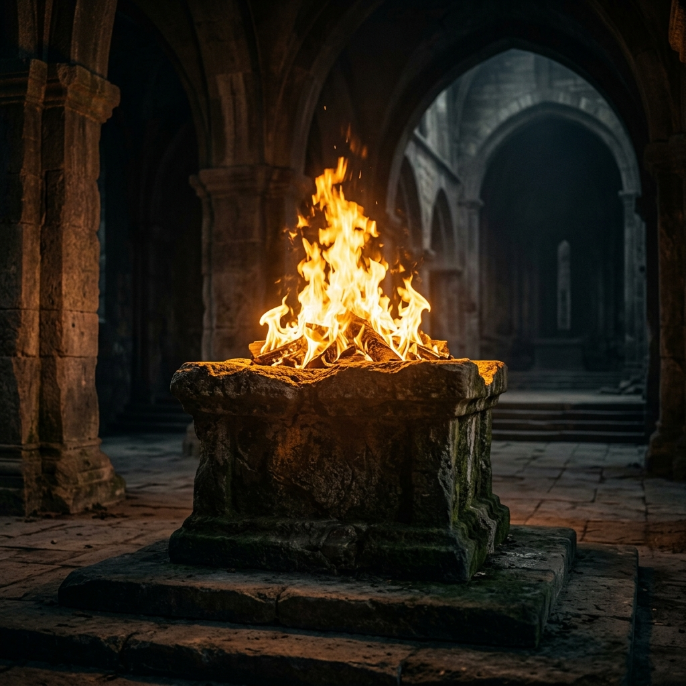
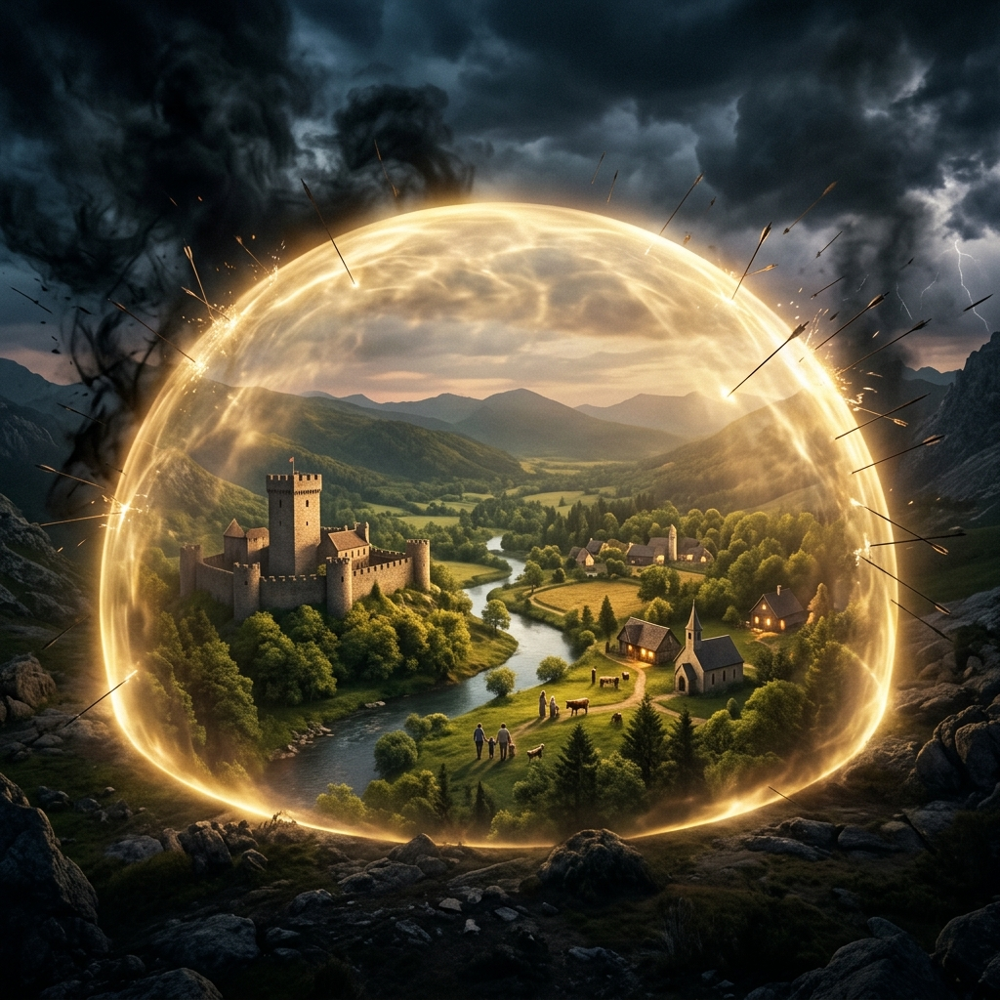
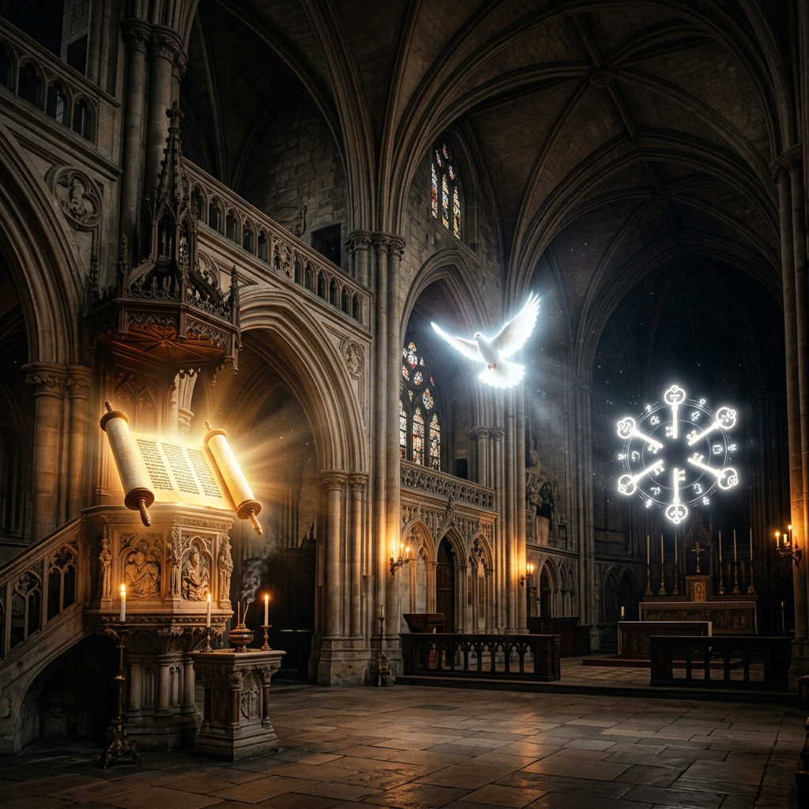

Masterclass Module
FELLOWSHIP
The Fire That Changes Everything
Most believers have a transaction with God. They come when they need something and leave when they get it. Fellowship is the shift from visiting to living—the perpetual state of abiding where true power is formed.
🔑 The One-Line Thesis
"There is a difference between visiting God and living in His presence. The tourist experiences the presence. The resident is fundamentally changed by it."
⚗️ The Abiding Protocol (SIMULATION)
The Secret Place is not a physical room. It is a perpetual state maintained by discipline. When you are merely a "Tourist" (visiting in crisis), your spiritual energy spikes and immediately dissipates. When you are a "Resident", the flow is continuous, accumulating into a permanent reservoir.
VISITATION VS DWELLING MECHANICS
The Insight: You cannot build lasting spiritual infrastructure on emotional visitation. It must be a non-negotiable daily culture.
🛡️ The Divine Security System (Psalm 91)
When a believer dwells in the secret place, Psalm 91 is not a passage they read; it is a description of the reality they live in. The shadow of the Almighty actively repels three specific forms of threat.

1. THE FOWLER'S SNARE (Hidden Traps)
The fowler hunts by concealment, not confrontation. Schemes that look like opportunity until they close. The secret place makes the snare visible to the spirit before the natural eye walks into it.
2. DEADLY PESTILENCE (Unseen Threats)
Biological, spiritual, and systemic threats that operate below the threshold of natural detection. Covert assignments gaining legal ground through compromise are incinerated by the dwelling presence.
3. THE TERROR BY NIGHT (Sudden Crisis)
Sudden, overt attacks unravel believers who hold onto favorable circumstances for peace. The one who dwells in the secret place has a peace established in a location that circumstances cannot reach.
🗺 The Three Dimensions of Intimacy
Every recurring deficiency in a believer's life traces back to an intimacy dimension that has not been developed. Tap each dimension below to uncover its specific mechanism.

🏛️ The School of Prayer (SIMULATION)
Prayer is a rigorous school of maturation. Most believers use it like a vending machine. Because they skip Level 1 (Transformation), their requests (Level 2) go unanswered—because answering an untransformed vessel with power will destroy it.
PRAYER ASCENSION PROTOCOL
🪞 The Fellowship Diagnostic
An honest evaluation of your spiritual state. The truth is where transformation begins.
Is your relationship with God primarily transactional (you come when you need something) or transformational (you are building a sustained daily habitation)?
When a sudden crisis arrives, is your first involuntary response absolute trust from the secret place, or immediate fear?
Which of the three dimensions of intimacy (Word, Spirit, Mysteries) is directly responsible for the specific struggle you are facing right now?
🔥 The Closing Declaration
THE ALTAR FIRE
"Fellowship is the fire that keeps the altar burning. An altar without fire is just a structure. Nothing is consumed. Nothing is transformed. I am coming back to the fire today."